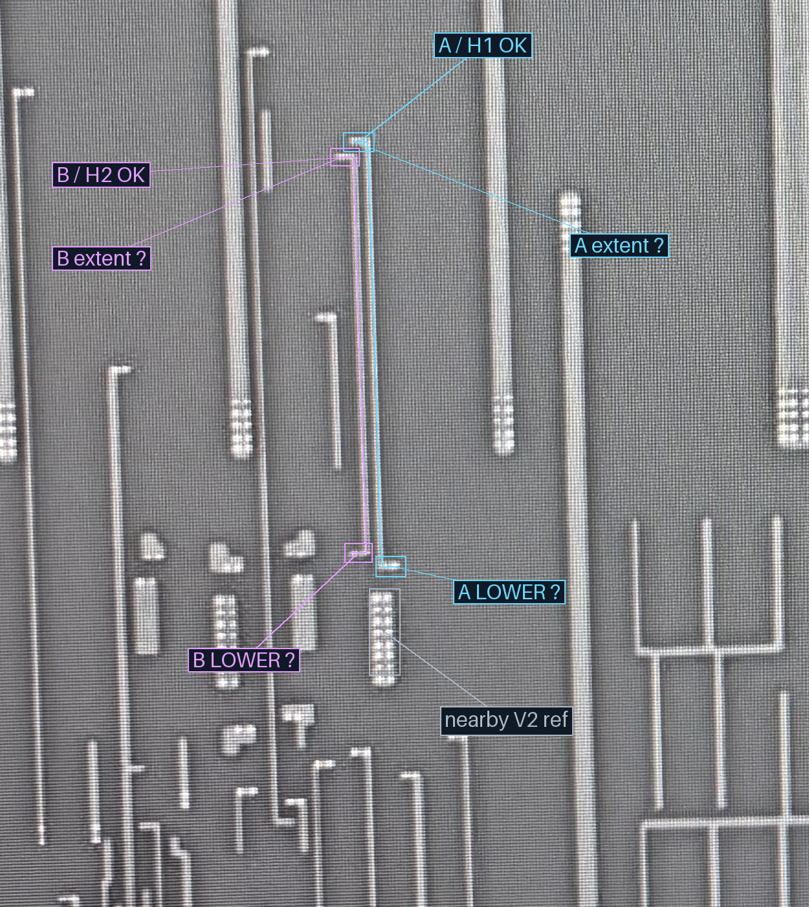
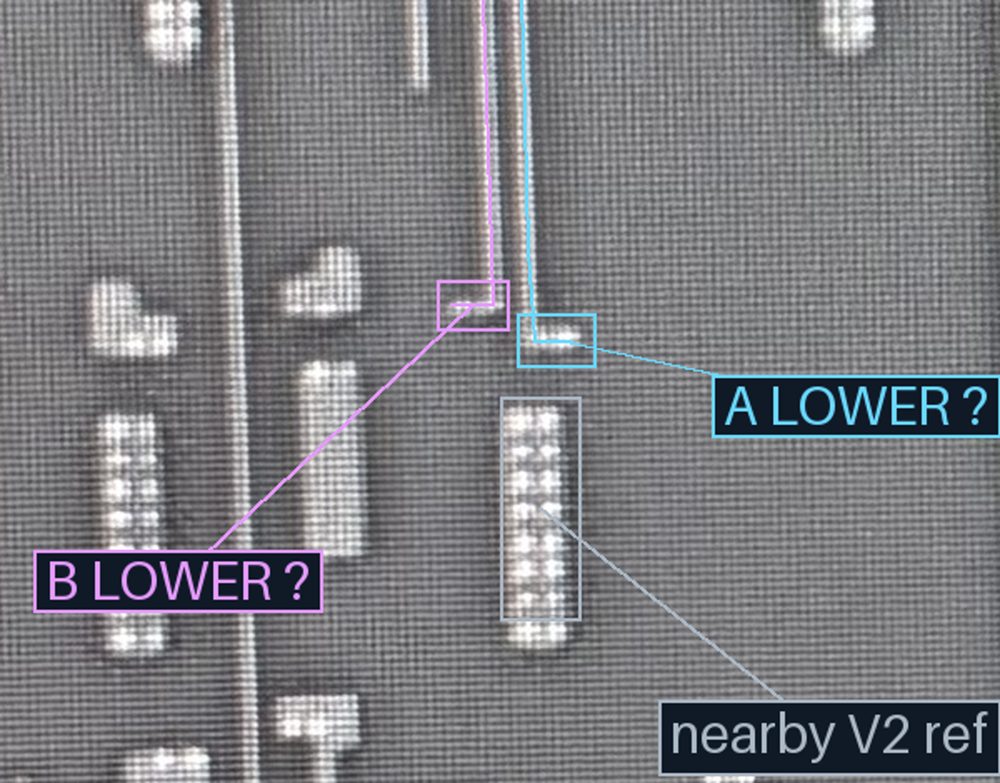
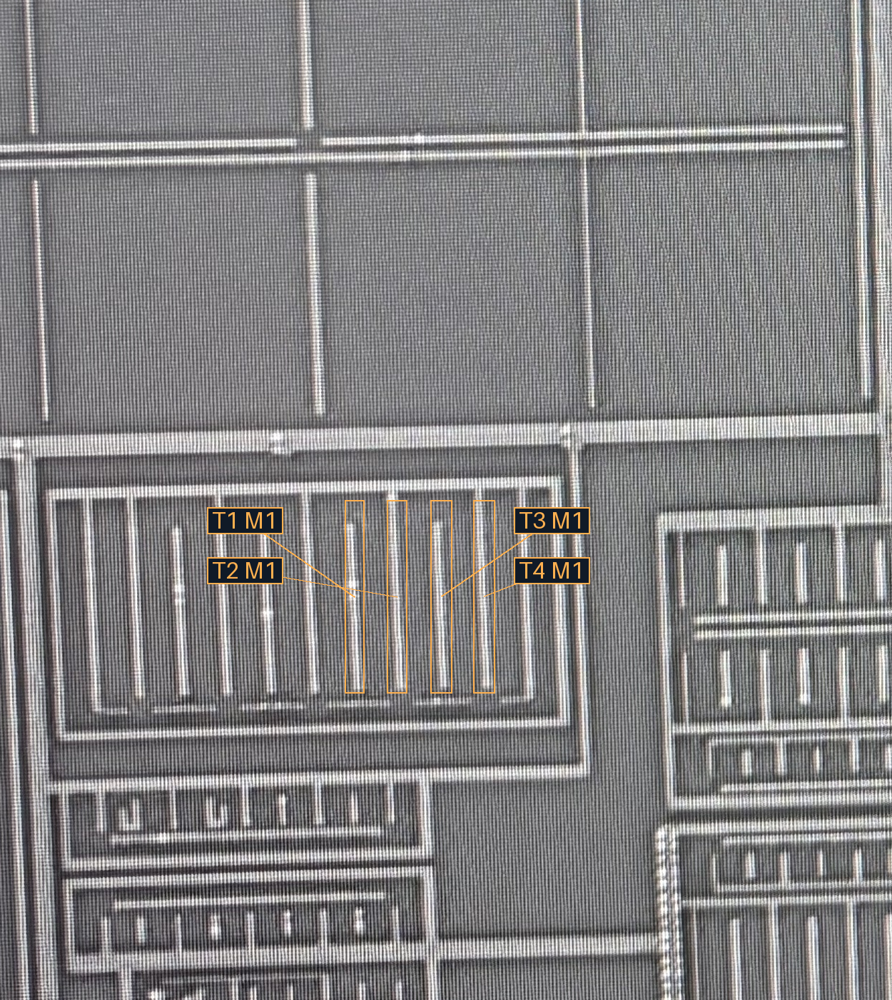
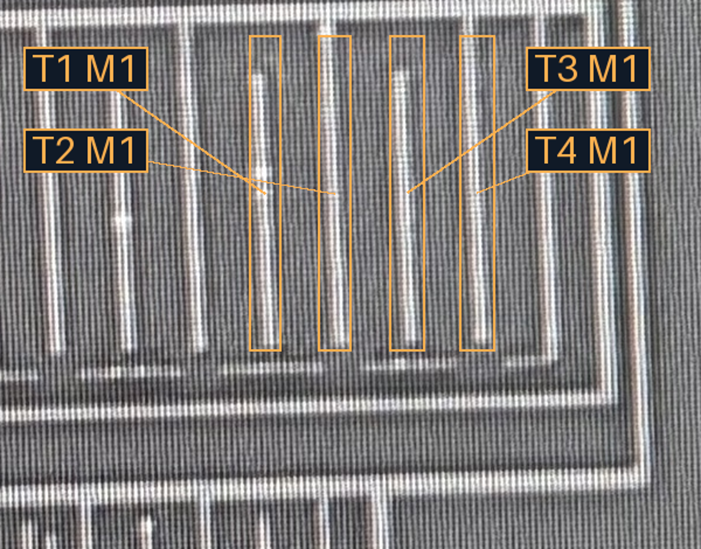
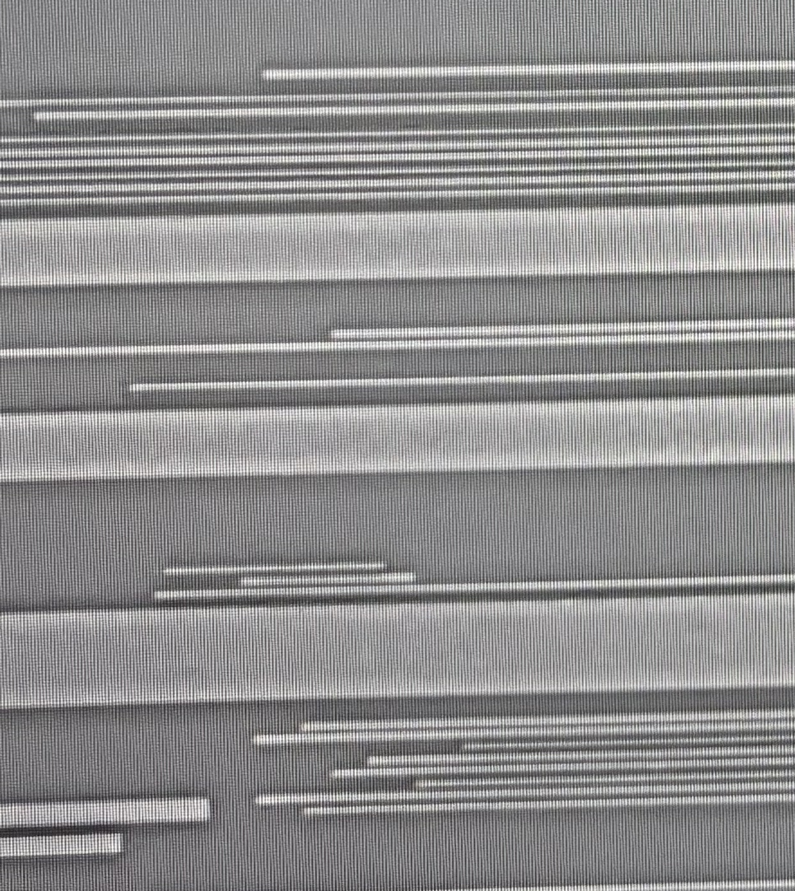
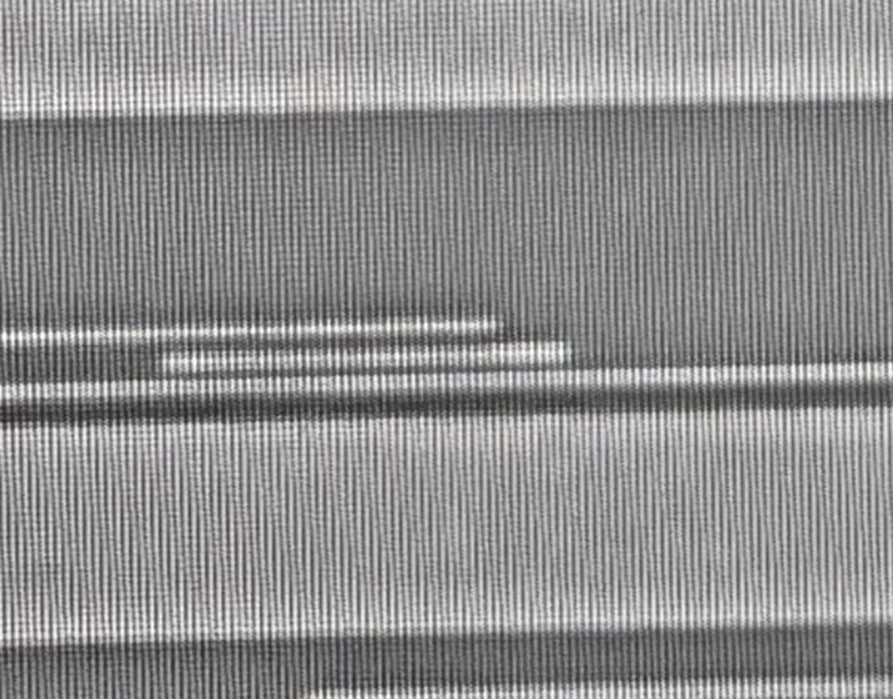

沿两根M2继续向下，A在下端折向右，B折向左。青／紫线只是AI沿原图的范围参考。两根细M2上未辨出清晰V2阵列，因此先回到M1查V1；“没看清”不等于“没有V2”。A下方大孔阵列仅作参照，不因靠近就并入A。
请判断一组新接口：A下端（向右短脚）、B下端（向左短脚）是否经V1向下接M1？若是，各接M1图中T1～T4哪条，或指出其他导体。T1～T4仅为M1内部的位置编号，尚未与A/B配对，也不代表已发现V1；不要求逐孔计数。
下方先给M2全路径，再给M1；可切层与原图，M3只作独立上下文。保留宽裁窗，不把相同原生坐标当精确对应。






接口级批准不代表精确孔形、配准或完整网络。原图、共同材料／导体几何和旧包不改；本页没有自动网表边，浏览器交互未实测。